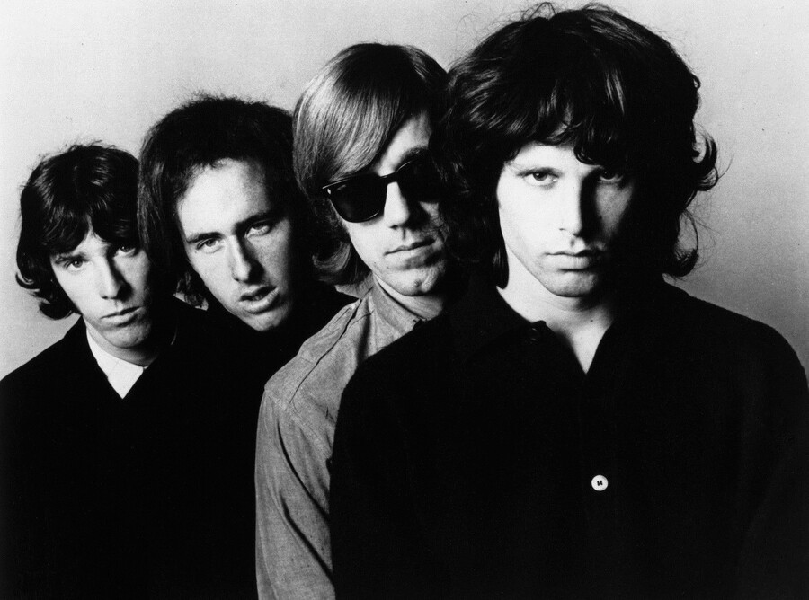

The album Strange Days is where The Doors traded the blues based rock of their debut for a darker, more theatrical sound.
Recorded across the first half of 1967, its title track put Jim Morrison's voice through a brand new Moog synthesizer.

Table of Contents
- Recording the Strange Days Title Track
- Making the Strange Days Album
- Chart Success and Lasting Legacy
- FAQ
Recording the Strange Days Title Track
The Doors cut the title track on April 26, 1967, in one overnight session at Sunset Sound Recorders.
Producer Paul Rothchild and engineer Bruce Botnick pushed the band through roughly thirty eight takes.
Bassist Doug Lubahn sat in on the session, filling out the low end.
Morrison had just returned from New York.
The song's restless verses grew out of what he saw on the city's streets.
The Moog That Processed Morrison's Voice
Session musician Paul Beaver brought a Moog synthesizer into the studio.
It was one of the first times the instrument turned up on a rock record.
Morrison did not play a Moog melody so much as sing through it.
Botnick fed Morrison's vocal track into the Moog.
A single key on its keyboard could then bend the pitch of every word.
He layered in tape delay and an infinite repeat, stretching the vocal into a studio effect rather than a straight performance.
The result remains one of rock's earliest synthesizer vocal treatments.
Making the Album Strange Days
The Doors built the album Strange Days between February and August 1967, only eight months after their debut hit record stores.
Rothchild and Botnick had new eight track recording gear, and the band used it to layer in sounds the first album never touched.
- Marimba, added to fill out several arrangements
- Orchestral strings, used sparingly across the record
- The Moog synthesizer, heard on the title track and on "Horse Latitudes"
- Doug Lubahn's session bass, layered under Manzarek's keyboard bass
Jim Morrison refused to pose for the cover, so photographer Joel Brodsky went a different direction entirely.
Brodsky staged a street scene in Sniffen Court, a courtyard off East 36th Street in Manhattan, filled with circus style performers instead of the band.
The Sniffen Court Cover Shoot
Brodsky drew on Federico Fellini's film La Strada for the concept.
He cast acrobats, jugglers, and a pair of dwarfs across the front and back covers.
Real street performers were hard to book on short notice, so Brodsky's own assistant juggled for the shot.
A cab driver working nearby agreed to pose holding a trumpet for five dollars.
The Doors themselves show up only as faces on posters glued to the courtyard wall.
Chart Success and Lasting Legacy
Elektra Records released the record on September 25, 1967.
It climbed to number 3 on the Billboard 200.
The RIAA later certified it Platinum, with more than a million copies sold in the United States.
Two singles carried it on the radio.
"People Are Strange" reached number 12, and "Love Me Two Times" reached number 25.
Side two closes with "When the Music's Over," an eleven minute piece critics still compare to "Light My Fire."
Author Stephen Davis called it one of the great artifacts of the entire rock movement.
Some reviewers at the time missed the raw punch of the band's debut.
Its darker, more theatrical mood has aged into one of the era's defining psychedelic rock records.
| Detail | Fact |
|---|---|
| Title track written by | Jim Morrison, Robby Krieger, Ray Manzarek, John Densmore |
| Title track recorded | April 26, 1967, Sunset Sound Recorders |
| Album sessions | February to August 1967, Sunset Sound Recorders |
| Producer | Paul Rothchild, engineer Bruce Botnick |
| Album released | September 25, 1967, on Elektra Records |
| Album peak | No. 3, Billboard 200 |
| Certification | Platinum, RIAA |
FAQ
What is the album Strange Days about?
Jim Morrison drew the title track's lyrics from what he saw of New York street life.
The wider record leans into a darker, more theatrical mood than the band's debut.
Where was the Strange Days album recorded?
The Doors recorded it at Sunset Sound Recorders in Hollywood between February and August 1967.
Paul Rothchild produced and Bruce Botnick engineered the sessions.
How did The Doors use a Moog synthesizer on Strange Days?
Engineer Bruce Botnick fed Jim Morrison's vocal track into a Moog synthesizer that session musician Paul Beaver brought to the studio.
A keyboard note reshaped the pitch of every word, then tape delay stretched it further.
Who is on the Strange Days album cover?
None of The Doors appear in person.
Photographer Joel Brodsky staged street performers in Sniffen Court in Manhattan, and the band shows up only as faces on posters glued to the courtyard wall.
How did the Strange Days album perform on the charts?
It reached number 3 on the Billboard 200 after its September 25, 1967 release.
It later earned a Platinum certification from the RIAA.
The album Strange Days took The Doors somewhere stranger than their debut had gone just eight months earlier.
The band had already introduced itself with Light My Fire and closed that record with the sprawling The End.
Wikipedia's entry on the album covers its full recording history.
Explore more on The Doors' artist page.
Back to the 1960smusic.net homepage to explore every genre of the decade.